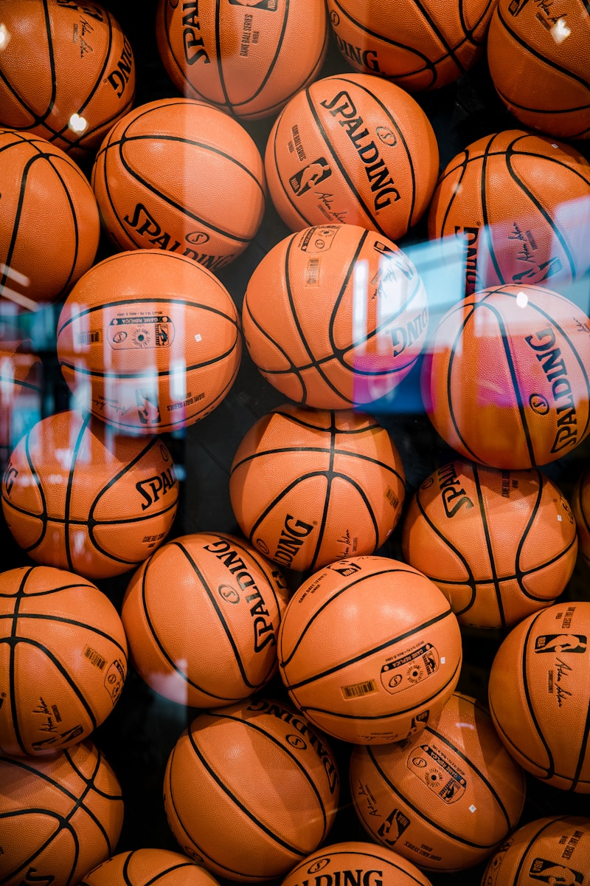

科研逻辑，产品化表达
让科研思维 变成真正能落地的 AI 工具
你好，我是亢鑫圆。我的核心优势是把实验、数据、分析流程与 AI 开发连接起来， 从研究问题出发，做出有实际使用场景的工具、装置和数字助手。
Research x AI Builder
亢鑫圆
西北工业大学生物材料硕士 / 数理基础背景
AI 数字分身在线
可以直接问我关于他的研究方向、代表项目、技能结构、合作匹配度，或你更关心的实际落地方向。
Featured Work
把“科研问题”做成“可以被使用的方案”
这里不是简单罗列经历，而是我如何从真实问题出发，串联材料、实验、算法与产品思维。
材料研发
高分子复合 / 应用场景驱动
无人机灭火高分子水带
面向无人机灭火痛点，围绕轻量化、高强度与耐压性能做材料路线设计，目标是让复杂环境下的输水环节更可靠。
- 重点提升抗拉、耐磨与耐压表现
- 从应用场景倒推材料指标和结构设计
- 体现“科研问题到工程方案”的转换能力
实验装置
自主设计 / 低温工况模拟
冷冻测试加压装置
自主设计开发低温环境下稳定运行的测温与加压装置，用于模拟材料在极端条件中的热力学行为与响应。
- 覆盖测温、加压、稳定运行等关键环节
- 服务实验验证，不是停留在理论构想
- 体现装置搭建与科研执行能力
AI 工具
Python / 图像处理 / 可视化
专业色彩量化分析平台
基于 AI 的专业色彩量化工具，集成 RGB、LAB、HSV 多色彩空间分析，并支持 3D 分布可视化，服务更专业的图像判断。
- 把算法结果做成易用的分析界面
- 兼顾科研解释性与工具可操作性
- 是“AI 辅助科研”能力的直接体现
科研成果
热稳定性 / 界面调控
超冷相变抑制材料
设计优化无冰保存材料体系，在低温条件下维持更稳定的亚稳态表现，聚焦热稳定性与界面调控能力。
- 对应 SCI 1 区 Top 一作成果方向
- 体现材料机制研究与实验推进能力
- 兼具理论理解与结果落地能力
Background
我的背景，不只是“会做实验”或“会写代码”
我更擅长的是把数理基础、科研训练和 AI 开发合并成一条完整的问题解决链路。
适合处理什么问题
当一个项目同时涉及实验流程、数据分析、结构化表达与工具实现时，我能把这些环节串起来，而不是只做其中一段。
我擅长的组合能力
科研方案理解
Python 开发
实验装置搭建
图像与数据分析
AI 辅助科研工具
跨学科表达
2023.09 - 2026.04
西北工业大学
生物材料硕士（保研）｜成绩 1 / 84
主修工程热物理、计算物理基础、新型生物材料应用等，获得研究生国家奖学金等荣誉。
2019.09 - 2023.06
内蒙古大学
数理基础科学（基地班）
系统接受数学分析、Python、量子力学、统计热力学等训练，建立扎实的数理逻辑底座。
Utility
私有记事本，保留在主站但降为次级能力
这里依然可以跨设备同步你的个人笔记。输入同一口令即可隔离数据，前台设计上不再抢主舞台，但功能保持可用。
请输入访问口令
输入你的专属口令后，即可同步并查看隔离保存的笔记内容。
Personal Side
保留一点热爱，也让网站更像“人”
Stephen Curry 这一页不再占据主舞台，但我还是保留了它。长期主义、稳定输出、关键时刻的执行力，这些特质对科研和开发同样重要。
去看高光集锦
Contact
如果你关心科研、AI 工具化，或者跨学科协作
可以直接发邮件、看 GitHub，或者先用右下角的 AI 助手快速了解我适合做什么。